-- m
Seleccionar Mapa Base
✕
OpenStreetMap
IGN Raster
OpenTopoMap
Esri Satélite
Perfil de Enrutamiento
✕
🥾 Senderismo / Montaña
🚲 Trekking / Cicloturismo
🚵 BTT / MTB (Montaña)
🛤️ Gravel
⚡ Carretera (Fastbike)
Opciones de Ruta
✕
Descargar Ruta
▼
KML (Jerárquico)
GPX
Descargar Archivo
Variantes de Ruta
▼
Número de alternativas adicionales:
0
1
2
3
Modo Zurdos
Puntos de Ruta
(0)
✕
1/1
PERFIL DE ELEVACIÓN
-- m / -- m
-- km

--

-- m

-- m
